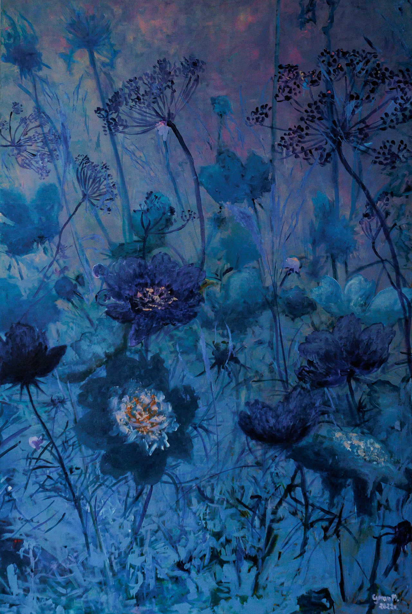
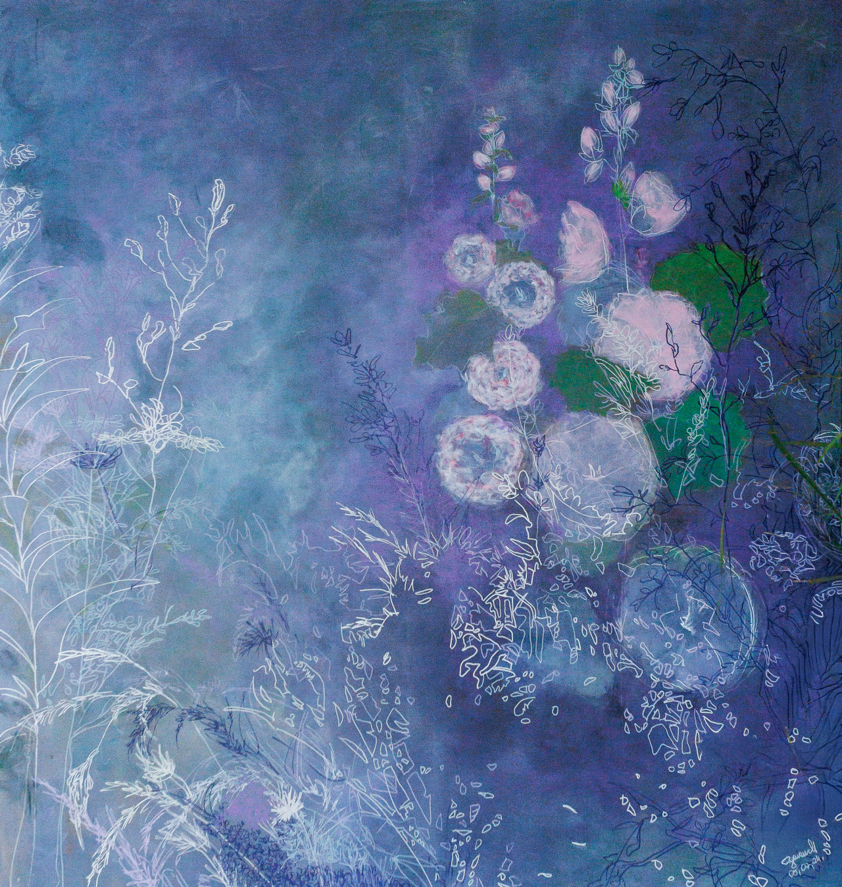
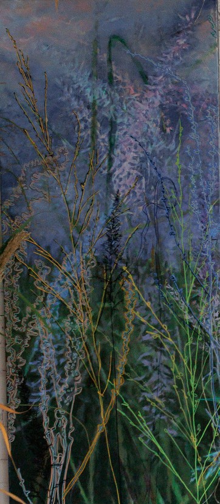
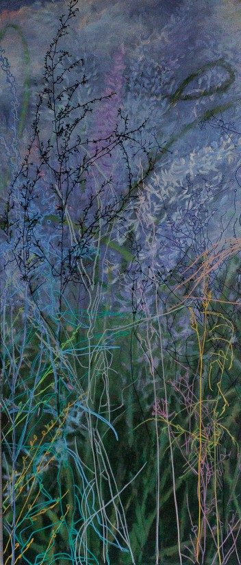
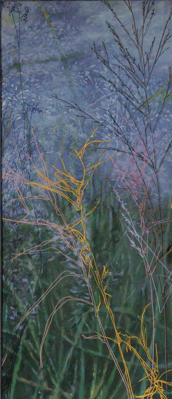
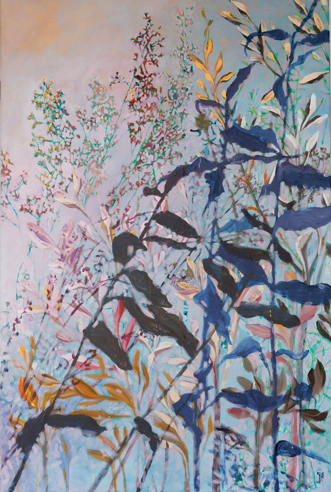
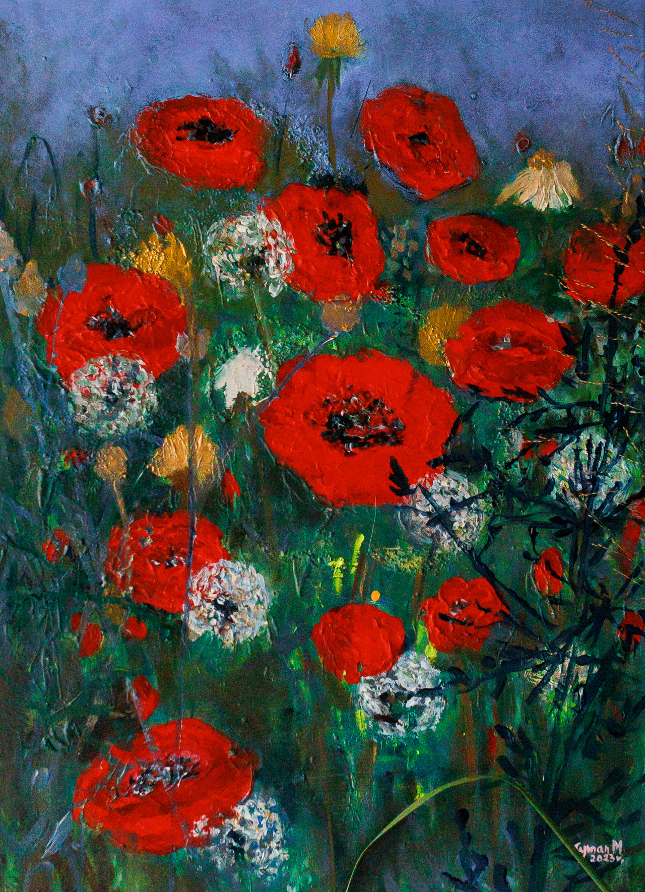
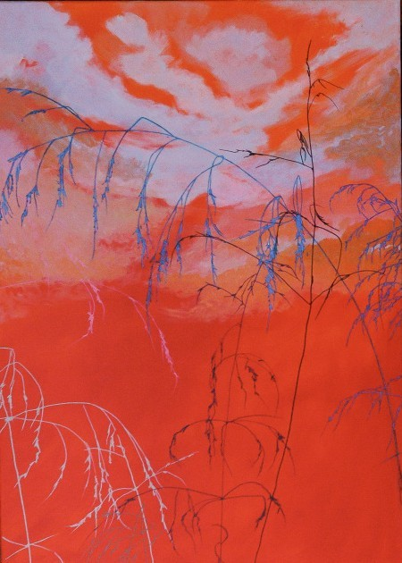
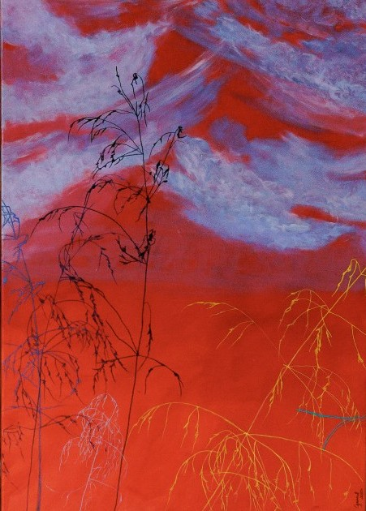
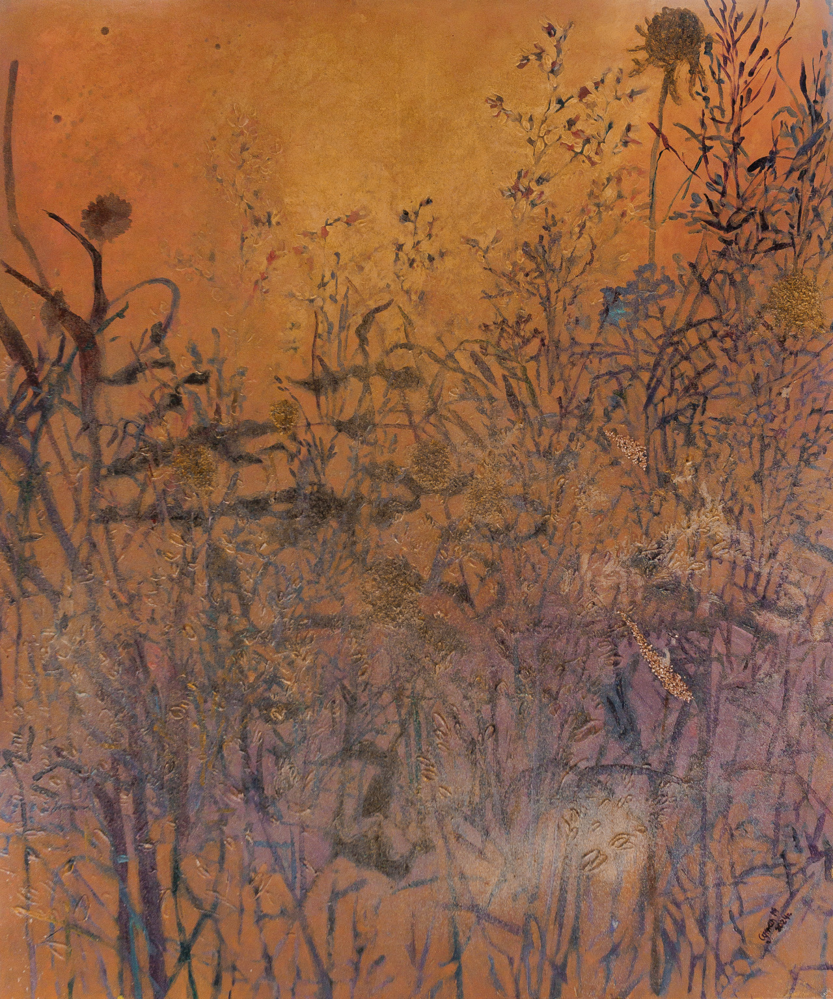

Przypomnij sobie to cudownie miękkie, drożdżowe ciasto, które wyrastało w słońcu, i ten obłędny zapach świeżych owoców unoszący się w starym, dobrym domu.
Pamiętasz tamten czas bezwzględnej beztroski? Dni, kiedy łąki mieniły się tysiącem odcieni, biegło się boso, goniąc wiatr i koniki polne, a jedynym zmartwieniem było to, jak szybko zachodzi słońce.
Ten obraz to coś więcej niż płótno – to zapach lata, który zatrzymałam na chwilę, żeby podziałać na Twoje zmysły i przenieść Cię do tamtego wymiaru czystej magii. To ciepło u boku babci, słodycz domowych konfitur i leżenie w trawie z głową w chmurach, z których układało się najpiękniejsze sny.
Choć lata lecą, te chwile wcale nie minęły bezpowrotnie. One żyją w nas, czekając, aż na nowo obudzimy je do życia. Niech ten obraz będzie Twoim kluczem. Zamknij oczy, weź głęboki oddech i wróc do domu, tam, gdzie czas nie ma żadnego znaczenia.

Znasz ten moment, kiedy w życiu robi się tak po prostu strasznie trudno?
Kiedy wokół jest tyle niedopowiedzianych rzeczy, że w głowie zaczyna wariować chaos, a ty tracisz grunt pod nogami. Wiem, jak to przytłacza. Ten obraz jest właśnie o tym, o tych chwilach, kiedy czujemy się zagubieni w gęstej mgle codzienności.
Ale spójrz na to proszę głębiej. Te trudne momenty to tylko zewnętrzna powłoka, taka chwilowa przykrywka. One wcale nas nie definiują. Nie są tym, kim naprawdę jesteśmy.
Więc jeśli teraz jest ci ciężko, proszę, nie trać z oczu samego siebie. Nie zatracaj się w tym zamęcie. Pamiętaj po prostu, kim jesteś pod tym wszystkim, ze swoją całą siłą i autentycznością. Poradzimy sobie z tym...



Zamknij oczy i wyobraź sobie moment, w którym świat na chwilę przestaje oddychać. Znamy to tylko z najgłębszych snów, ale ten tryptyk, mój pierwszy, jedyny taki, nad którym pracowałam z tak niesamowitym namaszczeniem – zamyka tę noc w sobie.
Nazwałam go „Eteryczny Szept Czułej Nocy”. I kiedy stajesz przed nim na żywo, nagle czujesz, jak czas gęstnieje. Te barwy nie zostały po prostu położone na płótno, one pulsują. To głęboka, aksamitna noc, która wcale nie jest ciemna; ona lśni tysiącem sekretnych odcieni fioletu, chłodnej zieleni i świetlistego pyłu.
Te rośliny, te delikatne, drżące linie nie są namalowane – one żyją. Wyglądają, jakby kołysały się pod wpływem niewidzialnego wiatru, szepcząc coś prosto do Twojej skóry. To czysta, niczym niezmącona zmysłowość. Obraz wciąga Cię w swój wymiar, staje się żywym oddechem, gęstym od magii powietrzem, które czujesz całym ciałem.
Nie ma tu przypadków. Jest za to ogrom serca, godziny zatracenia i ta niesamowita, eteryczna delikatność, która sprawia, że stojąc przed nim, po prostu zapominasz o całym świecie. Zostajesz tylko Ty, noc i ten szept, który rezonuje gdzieś głęboko w duszy.

Wiesz, jak to jest, kiedy po ciężkim dniu po prostu potrzebujesz złapać oddech? Ten obraz, 'Pastelowe love', to dla mnie dokładnie to uczucie, jak ciepły kocyk, który otula, kiedy najbardziej tego potrzebujemy.
Trzeba go zobaczyć na żywo, bo te delikatne, pastelowe kolory w tle dają niesamowite wyciszenie, zrozumienie, głębszy oddech, spokój, refleksję i takie upragnione zatrzymanie.
Ale z drugiej strony mamy tu te ciemne rośliny na pierwszym planie, które pokazują coś niezwykle ważnego: to, co trudne w życiu, jest tak samo ulotne, jak to, co piękne. Życie po prostu jest i należy go doświadczać w całej jego pełni. Bo tak samo jak wszystko co złe, tak samo i wszystko co dobre, w końcu minie. Chodzi o to, żeby nie osadzać się w przeszłości, tylko zacząć żyć w teraźniejszości. Przecież przyszłość i tak mamy niepewną, więc po co na zapas się nią przejmować?
Musimy tworzyć, kreować i doświadczać każdego dnia, ale też pamiętać o tym, żeby czasem się zatrzymać, odpocząć i po prostu... być.

Posłuchaj, muszę Ci pokazać ten mały, absolutnie wyjątkowy obraz. Gdy na niego patrzę, przenoszę się do zupełnie innego wymiaru, do świata czystej bajki, szczęścia i tego zapomnianego, dziecięcego zachwytu, kiedy czas po prostu się zatrzymywał.
To opowieść o cudownych makach, które otulają duszę dając niesamowity spokój i głębokie wyciszenie. Pamiętasz to uczucie, kiedy pola były dosłownie usiane czerwienią, a w powietrzu słychać było to ciche, magiczne cykanie makówek? Każdy podmuch wiatru poruszał nimi w tak niezwykłym, delikatnym tańcu, jakby na ich płatkach krążyły niewidzialne dla oczu wróżki. Można było poczuć całą sobą ich ciepłą energię, uśmiechnąć się do słońca i po prostu zachłysnąć się pięknem.
Ten obraz to dokładnie ten moment. Iskra radości, która sprawia, że znów stajemy się dzieckiem, dla którego świat jest pełen magii, a każda chwila smakuje jak najpiękniejsza baśń.


Słuchaj, chcę Ci pokazać obraz o nazwie 'Autentyczność'. Zależało mi w nim na pokazaniu takiej całkowicie nieprzerysowanej formy tego, jak naprawdę się czujemy. To przypomnienie, że pierwotne zamysły są często najlepszym wyborem i że nie trzeba wiele, żeby po prostu... być.
Bo nie oszukujmy się, sami w sobie jesteśmy wyjątkowi. Każdy z nas ma w sobie iskrę boskości, każdy z nas jest naprawdę cudowny. Już samo to, że jesteśmy, że istniejemy, jest niezwykłe. Ale tak często o tym zapominamy. Tak często gasimy własne światło i własne kolory, chcąc się dopasować i żyć w zgodzie z oczekiwaniami innych, odwracając się tak naprawdę od samych siebie. Tak bardzo chcemy się nie wychylać, boimy się opinii ludzi i w tym wszystkim się zatracamy. Nakładamy na siebie tyle warstw, że w pewnym momencie przestajemy wiedzieć, gdzie ukrywa się nasza prawdziwa autentyczność.
A przecież nie musisz być przerysowana. Nie musisz się do niczego dopasowywać. Po prostu bądź – delikatna w swojej istocie, wyjątkowa już w samym fakcie, że żyjesz. To jest tak piękne, cudowne i w pełni wystarczające. Już samo to, że jesteś.

Cześć! Chcę Ci pokazać „W świetle słońca ”, który jest dla mnie czystą formą zabawy, doświadczania i takim dowodem na to, że nasza osobowość potrafi zaskoczyć, nawet nas samych. Różne sytuacje w życiu pokazują przeróżne części nas, a autentyczność jest czymś niesamowitym i wyjątkowym.
Specjalnie nałożyłam na ten obraz brokat, chciałam żeby przekaz był mocny i pokazywał, że każdy z nas przyszedł na ten świat po coś ważnego. Każdy z nas ma w sobie coś wspaniałego i niepowtarzalnego. I tak jak z tym dziełem, kiedy słońce pada na drobinki brokatu, staje się ono czymś niezwykłym, a kiedy wisi w cieniu, wygląda jak zwykły obraz.
Z nami jest dokładnie tak samo. Kiedy mamy wokół siebie środowisko, które nam sprzyja, które pozwala nam się rozwijać i wzrastać, świecimy pełnym blaskiem. Ale bywa też tak, że trafiamy na miejsca i ludzi, którzy nas gaszą.
Najważniejsze to wtedy nie poddawać się, czuć siebie i kreować z pozycji własnego serca. Nie chodzi o to, żeby obrastać w piórka, ale o to, by nigdy nie pozwalać nikomu gasić naszego światła. Żeby pamiętać, że to my znamy siebie najlepiej i to nasze zdanie liczy się najbardziej.
Mi też w życiu nie było łatwo. Pomimo to się nie poddaję, i tak jak wielu ludzi we mnie nie wierzyło, tak ja uczę się każdego dnia wierzyć w samą siebie, stawiać na siebie i kochać siebie bezwarunkowo. Przekazuję to dalej, żeby pokazać, że naprawdę się da. Walcz o siebie, bądź sobą, nie daj gasić swojego światła, rób to, co kochasz i po prostu bądź szczęśliwa/y.
Wszelkie materiały, dzieła, zdjęcia, grafiki, teksty oraz inne treści prezentowane w niniejszym serwisie stanowią wyłączną własność Magdaleny Cyman i są chronione prawem autorskim oraz przepisami o ochronie własności intelektualnej.
Kopiowanie, zwielokrotnianie, rozpowszechnianie, modyfikowanie lub jakiekolwiek inne wykorzystywanie prezentowanych materiałów w całości lub w części, bez uprzedniej pisemnej zgody Magdaleny Cyman, jest surowo zabronione.